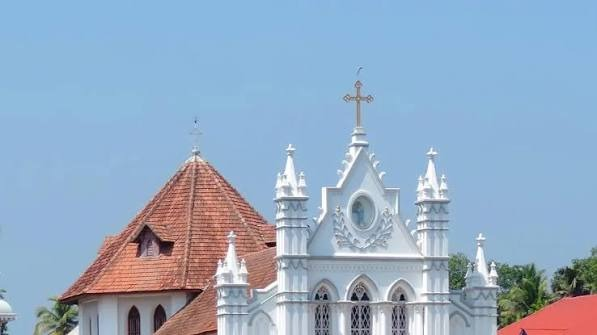
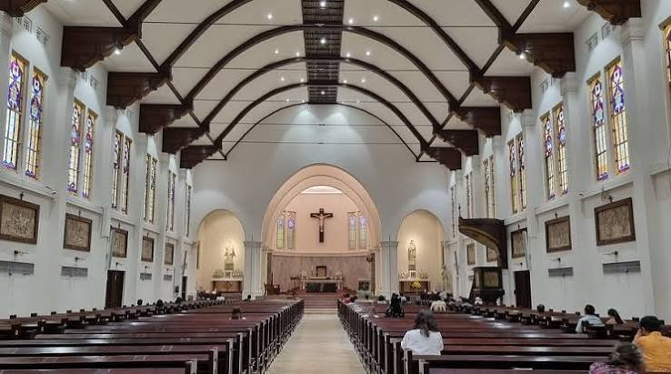
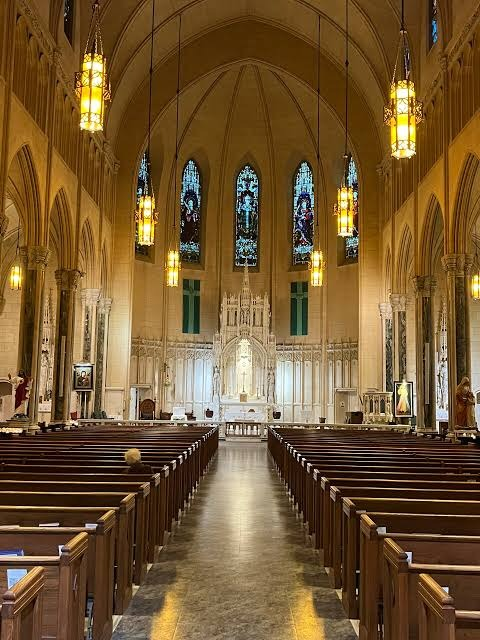
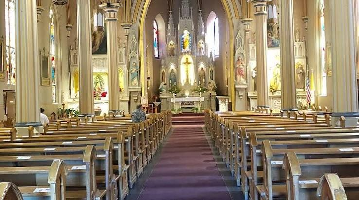
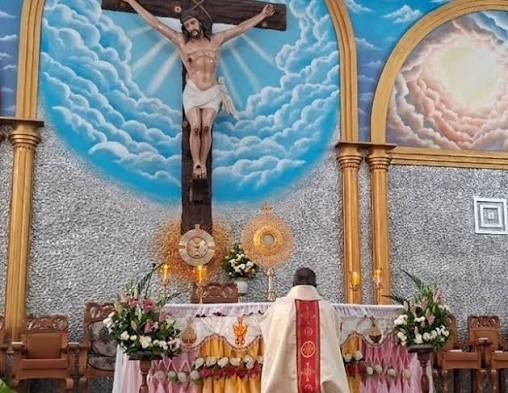

Churches
Locate prominent churches and Christian parishes in the Neyveli Township.

St. Gabriel's Catholic Church
📍 Block 24, Neyveli Township
A beautiful and large Catholic parish in Block 24, serving as a key center of worship.
View Details
Sacred Heart Church
📍 Block 18, Neyveli Township
A peaceful church located in Block 18, popular for its weekly community meetings.
View Details
St. Joseph's Church
📍 Block 2, Neyveli Township
A vibrant parish church serving families in Block 2 and surrounding residential sectors.
View Details
TELC Holy Trinity Church
📍 Block 9, Neyveli Township
A historic Lutheran church in Block 9, part of the Tamil Evangelical Lutheran Church diocese.
View Details
IPC Neyveli Bethel Church
📍 Block 5, Neyveli Township
A lively Pentecostal church in Block 5, part of the India Pentecostal Church of God.
View Details
CSI Good Shepherd Church
📍 Block 26, Neyveli Township
The largest Church of South India (CSI) parish in Neyveli, hosting weekly Sunday services.
View Details